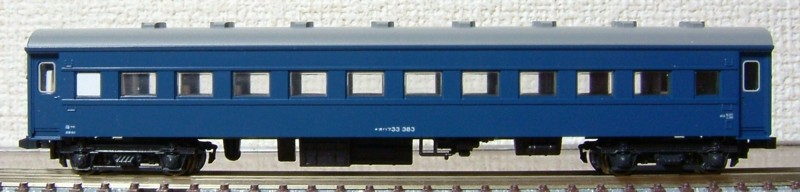
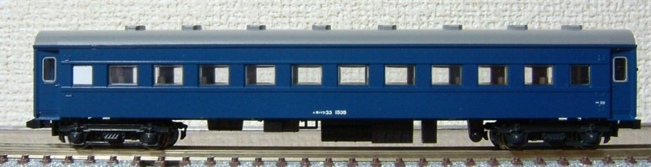
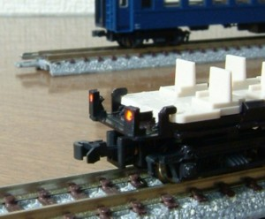
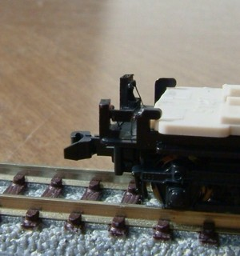
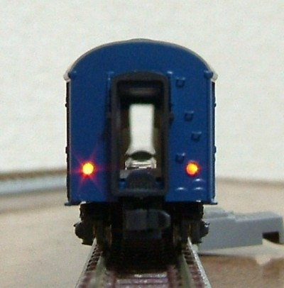
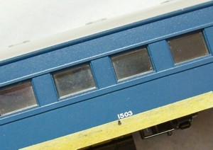
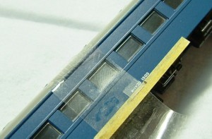

オハフ33-1500
オハ35を緩急車改造した車両のうち、ころ軸受け台車(TR34)を装備した車両です。
大部分の車両は、近代化改造されており車掌室窓は700mm幅・塗色は青15号となっています。
同じくオハ35を緩急車改造した車両に 1000番台がいますが、
こちらは平軸受けの車両が多くほとんど近代化改造の対象となっていません。車掌室窓は1000mm幅のままです。
オリジナルのオハフ33には見られない、"絞り折妻"の車両も多く見られます。
昔の写真で、オハ35系からこのグループを探し出すのは結構楽しいです。
(「国鉄全線車窓の旅」の、関西・紀勢本線で1両見つけました)


間違い探しから。
上はオリジナルのオハフ33、下は1500番台です。
- 妻面の形状が絞り折妻ですので屋根が折れています。(実車には、キノコ折妻の車両も存在します)
- 車掌室窓はともに700mmですが、1500番台は窓が中央側によっています。
- 床板の方向が逆です。

左がオリジナル、右が1500番台です。
屋根登上用の踏み段が、はしごではなくステップになっています。
工作の概要です。
- タネ車は、KATO のオハ35戦後型・青。
- 車掌室窓を700mmに改造。他の客車から700mm幅の窓を調達。
- テールライト設置。プラ棒で作った枠 + 1.0φ光学繊維。
- テールライトユニットはチップLEDで自作。
- 床板・窓ガラスはKATO オハ35型のものを使用。窓ガラスは車掌室窓に合わせて削る。



テールライトユニットは、スロ81系と同じくチップLEDによる自作です。
t1.0プラ板に穴を開けたところにチップLEDを埋め込み、そこに空中配線です。抵抗も空中配線してます。
点灯/消灯スイッチをつけたかったのですが面倒になり中止。集電板にそのまま配線を半田付けしてます。
LEDでレンズの背後を直接照らしているため見る角度によって左右の明るさが結構変わりますが、
写真ほどには目立ちません。
いつもの作業ではありますが、ナンバーをつけている途中の写真を撮ってみました。
インスタントレタリングから番号を拾いながらつけてゆきます。
残念ながら、ナンバーの中心位置がずれていたことがわかり(中心は "3" になる)、結局全部付け直しましたが…。


当初、オハ36のオマケ(床板を確保したのであまった車体で作り始めた)だったのですが、
製作途中に床板にオハ35のものが必要なことがわかり、一躍主役に躍り出てます…。
絞り折妻+ステップの緩急車は編成の端に出すと存在感抜群で、一気にお気に入りになりそうです。
これも、DD54 とつなげるのが楽しみです。
トップへ戻る